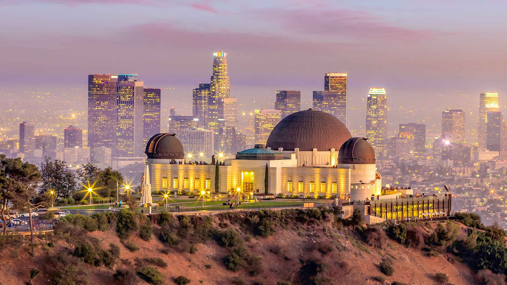

L'observatoire Griffith est un observatoire astronomique construit en 1935 à Los Angeles dans l'État de Californie aux États-Unis. Situé sur la face sud du Mont Hollywood dans le Griffith Park à 300 mètres d'altitude, c'est un endroit apprécié des touristes et des habitants de la ville pour ses expositions scientifiques, son planétarium et le panorama qu'il donne sur toute la région allant du centre-ville de Los Angeles jusqu'à la baie de Santa Monica et l'océan Pacifique. Le bâtiment, de style art déco et égyptien, a été rénové et a rouvert ses portes le 2 novembre 2006 au terme de quatre ans de travaux. Il a été visité par 70 millions de personnes depuis son ouverture
Observatoire Griffith
PRESENTATION
L'observatoire Griffith apparaît dans plusieurs films et séries, parmi lesquels Le Maître du monde (1954), La Fureur de vivre (1955)1, Mannix (1967), Terminator (1984)1, MacGyver (1985), Les Aventures de Rocketeer (1991), Bienvenue à Gattaca (1997), Charlie's Angels : Les Anges se déchaînent ! (2003), Yes Man (2008), BoJack Horseman (2014-2020), Terminator Genisys (2015), La La Land (2017)1, Lucifer saison 3, épisode 26, Under the Silver Lake (2018), Goliath saison 2, épisode 8 (2018) ainsi que dans plusieurs jeux vidéo, tels que Future Cop L.A.P.D., Mafia II, GTA : San Andreas et GTA V.
CHRONOLOGIE HISTORIQUE
Avant l'ouverture
- 1896: Le conseil municipal de Los Angeles accepte le don de 3 015 acres de Griffith J. Griffith pour Griffith Park (16 décembre)
- 1912: Griffith J. Griffith fait son offre de fonds pour un observatoire public au conseil municipal de Los Angeles (12 décembre)
- 1919: Décès de Griffith J. Griffith (6 juillet) ; il laisse des fonds pour la construction de l'observatoire (et du théâtre grec) dans son testament
- 1933: Pose de la première pierre du nouveau bâtiment de l'Observatoire (20 juin)
- 1934: Le monument des astronomes, financé par le New Deal Public Works of Art Project (PWAP), est inauguré (24 novembre)
- 1935: L'Empire fantôme, premier de centaines de films tournés à l'observatoire Griffith, ouvre ses portes au public (23 février)
Années 1930
- 1935: L'inauguration officielle de l'observatoire Griffith (14 mai) et ouverture au public (15 mai)
- 1935: Le programme d'excursions scolaires de l'Observatoire - l'un des premiers dans la région - commence peu après son ouverture (juin). Les programmes scolaires se sont déroulés sans interruption de 1935 à 2001, amenant des millions d'élèves en excursion
- 1937: Début de la publication du magazine mensuel d'astronomie Griffith Observer (février).
- 1937: La carte du ciel de l'Astrorama de l'Observatoire Griffith est vendue pour la première fois au public. Il a été produit sans interruption depuis.
Années 1940
- 1942: Des pilotes militaires s'entraînent dans le théâtre du planétarium pour naviguer par les étoiles (janvier-février).
- 1942: L'observatoire est fermé tous les soirs à cause de la Seconde Guerre mondiale (février - mai).
- 1942: Les membres de la 121e artillerie côtière sont en garnison à l'Observatoire (à partir du printemps).
- 1942-1946: L'observatoire est fermé les soirs de semaine à cause de la Seconde Guerre mondiale (mai 1942 - novembre 1946).
- 1947: La Los Angeles Astronomical Society (LAAS) tient sa première réunion à l'Observatoire (14 octobre). Les membres du LAAS se sont réunis à l'Observatoire presque sans interruption depuis 1948.
- 1948: Première de A Trip to the Moon, le premier spectacle de planétarium sur les voyages dans l'espace (28 juin).
Années 1950
- L'Observatoire de 1955 est présenté - le jeu lui-même ! - dans le film classique Rebel Without a Cause (27 octobre).
- 1958 Le Dr Dinsmore Alter prend sa retraite après 23 ans en tant que premier directeur de l'Observatoire.
Années 1960
- 1962: La prédiction largement médiatisée de la « fin du monde » attire les plus grandes foules jamais vues à l'Observatoire (4 février).
- 1964: Le projecteur de planétarium Zeiss Mark II d'origine est remplacé par un projecteur Zeiss Mark IV (31 mars).
- 1966-1967: Les astronautes d'Apollo s'entraînent dans le théâtre du planétarium pour naviguer par les étoiles (septembre 1966 - décembre 1967).
- 1969 Le Dr Clarence Cleminshaw prend sa retraite après 34 ans de service en tant que directeur adjoint (1935-1958) ou directeur (1958-1969). Au cours de son service, le Dr Cleminshaw a donné plus de 7 700 conférences sur le planétarium.
Années 1970
- 1973: Laserium est présenté pour la première fois à l'Observatoire (19 novembre) et offre des programmes pendant 28 ans (se terminant le 6 janvier 2002).
- 1974: Le Dr William Kaufman démissionne après quatre ans en tant que troisième directeur (1970-74).
- 1974: Le Dr E.C. Krupp devient le quatrième directeur (septembre) ; son service de 45+ ans fait de lui le directeur ayant le plus d'ancienneté.
- 1976: L'observatoire Griffith est officiellement désigné monument historique et culturel de Los Angeles n° 168.
- 1978: Le Dr Krupp et Debra et Harold Griffith constituent officiellement les Amis de l'Observatoire (4 décembre).
Années 1980
- 1981: L’Observatoire introduit l’utilisation des premiers ordinateurs publics et de bureau dans la ville de Los Angeles (décembre).
- 1984: Nettoyage des dômes en cuivre de l’Observatoire (du 16 février 1984 au 8 novembre 1985).
- 1985: L’Observatoire célèbre son 50e anniversaire avec de grandes foules, des gâteaux, des ballons et des réjouissances générales (14 mai).
- 1985: La comète de Halley attire des foules sans précédent à l’Observatoire (8 novembre 1985 – 6 mai 1986). Plus de gens voient la comète de Halley à l’observatoire Griffith que partout ailleurs dans le monde.
- 1989: L’observatoire est en vedette sur le char de la Rose Parade (1er janvier).
Années 1990
- 1990: Le Los Angeles Board of Recreation and Park Commissioners approuve le plan directeur pour l’avenir de l’observatoire (5 juillet).
- 1991: Fin de la restauration du monument des astronomes avec dévoilement public de la nouvelle sphère armillaire en bronze (14 mai).
- 1994: Des foules immenses se pressent à l’Observatoire pour une observation télescopique en direct de la comète Shoemaker-Levy 9 s’écrasant sur Jupiter (17 juillet). Plus de gens voient les cicatrices de l’impact de la comète Shoemaker-Levy 9 à l’Observatoire que partout ailleurs dans le monde.
- 1996: L’Observatoire lance son premier site officiel dans la ville de Los Angeles (septembre).
- 1996: Les commissaires autorisent l’embauche d’architectes pour commencer les travaux de conception de la rénovation et de l’agrandissement de l’Observatoire (1er juin).
- 1997: Plus de gens voient la comète Hale-Bopp à l’Observatoire Griffith que partout ailleurs sur Terre (19 mars – 4 mai).
Années 2000
- 2002: L’Observatoire ferme ses portes au public après 67 ans de service pour rénovation et agrandissement (6 janvier).
- 2002: Le gouverneur, le maire et d’autres dignitaires inaugurent le projet de rénovation (30 octobre).
- L’observatoire de 2003 montre que plus de personnes (18 000) se sont approchées de Mars au plus près de Mars en 59 619 ans que partout ailleurs (26-27 août).
- 2006: Le bâtiment et le terrain de l’Observatoire rouvrent au public après une rénovation de 93 millions de dollars (2 novembre).
- 2007: L’Observatoire lance un programme scolaire éducatif sans précédent de 2,5 heures pour les élèves de 5e année (8 mars).
- 2007: L’Observatoire accueille la réception de la Conférence des maires des États-Unis (22 juin).
- 2007: L’Observatoire met fin à la réouverture du système de navettes et reprend l’accès direct du public en voiture (2 novembre).
- L’Observatoire 2008 est nommé l’un des « dix meilleurs endroits à voir avant d’avoir dix ans » par le magazine Travel and Leisure.
- L’Observatoire 2009 est en vedette sur le char de la Rose Parade (1er janvier).
- 2009: Le lancement d’un nouveau spectacle de planétarium et de nombreux autres programmes marquent l’Année internationale de l’astronomie (3 février).
- L’événement 2009 Cosmic Junction 2009 comprend une symphonie sur la pelouse, une composition musicale originale et une narration de Leonard Nimoy (4 octobre).
Années 2010
- L’Observatoire 2010 célèbre son 75e anniversaire avec des activités publiques et un événement FOTO (14 mai).
- L’éclipse solaire partielle de 2012 attire une foule immense sur la pelouse (20 mai).
- L’Observatoire de 2012 montre que plus de personnes (18 000) se sont approchées le plus près de Mars en 59 619 ans que partout ailleurs (26-27 août).
- 2012: La navette spatiale Endeavour survole l’Observatoire à deux reprises (21 septembre).
- Célébration 2012 « Pas la fin du monde » (21 décembre).
- 2015: Week-end d’activités publiques célébrant le 25e anniversaire du télescope spatial Hubble (24-27 avril).
- L’événement d’observation de 2015 pour la dernière des quatre éclipses lunaires consécutives comprend une performance de piano en direct (27 septembre).
- 2016: Transit of Mercury en direct en ligne (9 mai).
- 2017: Grande foule pour l’observation d’une éclipse solaire partielle, dans le cadre de la grande éclipse américaine (21 août).
- Mars: 2018 approche de l’événement public et de la diffusion en ligne, y compris Buzz Aldrin (30 juillet).
- 2019: L’Observatoire a fermé pendant deux semaines pour l’installation de l’éclairage, des trottoirs et du CVC (du 22 avril au 6 mai).
- 2019: Onze jours d’événements publics pour célébrer le 50e anniversaire de la mission Apollo 11 (13-24 juillet).
2020
- L'Observatoire 2020 ferme, ainsi qu'une grande partie de Los Angeles, en raison du coronavirus (13 mars).
- L'Observatoire 2020 fête son 85e anniversaire (14 mai).